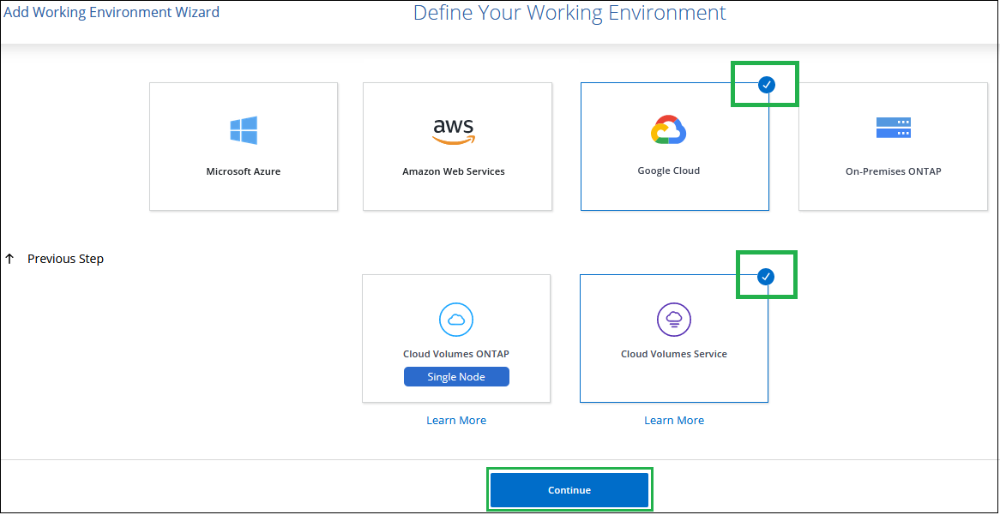
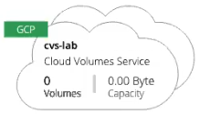

GoogleCloudのクラウドボリュームサービスを設定する
寄稿者
 このページのPDFをダウンロード
このページのPDFをダウンロード
CloudManagerでGoogleCloud作業環境用のCloudVolumes Serviceを作成して、ボリュームとスナップショットを作成および管理します。
クイックスタート
これらの手順に従ってすぐに開始するか、次のセクションに進んで詳細を確認してください。
 Cloud Volumes ServiceAPIを有効にする
Cloud Volumes ServiceAPIを有効にする
Googleから、Cloud Volumes Service for GCP APIを有効にして、CloudManagerがサブスクリプションとクラウドボリュームを管理できるようにします。
GCPサービスアカウントを作成し、認証情報をダウンロードします
GoogleからGCPサービスアカウントとロールを作成して、CloudManagerがCloudVolumes Service forGCPアカウントにアクセスできるようにします。
 GCP作業環境向けのCloudVolumesサービスを作成する
GCP作業環境向けのCloudVolumesサービスを作成する
Cloud Managerで、[作業環境の追加]> [ Google Cloud] > [ Cloud Volumes Service ]をクリックし、サービスアカウントとGoogleCloudプロジェクトの詳細を入力します。
Cloud Volumes ServiceAPIを有効にする
Google Cloud Shellで、次のコマンドを実行してCloud Volumes ServiceAPIを有効にします。
gcloud --project=<my-cvs-project> services enable cloudvolumesgcp-api.netapp.com
CloudManagerにGCPアカウントのCloudVolumesServiceへのアクセスを許可します
CloudManagerがGoogleCloudプロジェクトにアクセスできるようにするには、次のタスクを完了する必要があります。
新しいサービスアカウントを作成します
新しいサービスアカウントメンバーをプロジェクトに追加し、特定の役割（権限）を割り当てます
Googleへの認証に使用されるサービスアカウントのキーペアを作成してダウンロードします
Google Cloud Consoleで、[サービスアカウント]ページに移動します。
[プロジェクトの選択]をクリックし、プロジェクトを選択して、[開く]をクリックします。
[サービスアカウントの作成]をクリックし、サービスアカウント名（わかりやすい表示名）と説明を入力して、[作成]をクリックします。
-
IAMページから[追加]をクリックし、[メンバーの追加]ページのフィールドに入力します。
[新しいメンバー]フィールドに、完全なサービスアカウントIDを入力します（例： user1-service-account-cvs@project1.iam.gserviceaccount.com） 。
-
これらの役割を追加します。
NetApp CloudVolumes管理者
コンピューティングネットワークビューア
フォルダビューア
[保存]をクリックします。
[サービスアカウントの詳細]ページで、[キーの追加] > [新しいキーの作成]をクリックします。
-
キータイプとしてJSONを選択し、[作成]をクリックします。
[作成]をクリックすると、新しい公開鍵と秘密鍵のペアが生成され、システムにダウンロードされます。これは、秘密鍵の唯一のコピーとして機能します。このファイルはサービスアカウントとしての認証に使用できるため、安全に保管してください。
詳細な手順については、Google Cloudのトピック「 サービスアカウントの作成と管理」 、「 リソースへのアクセスの許可、変更、取り消し」、「サービスアカウントキーの作成と管理」を参照してください。
GCP作業環境向けのCloudVolumesサービスを作成する
CloudManagerでGCP作業環境用のCloudVolumes Serviceをセットアップして、ボリュームの作成を開始できるようにします。
Google Cloud Consoleからすでにボリュームを作成している場合でも、Cloud Volumes Service for GCPに登録したばかりでまだボリュームがない場合でも、最初のステップはGCPサブスクリプションに基づいてボリュームの作業環境を作成することです。
このサブスクリプションのクラウドボリュームがすでに存在する場合、ボリュームは新しい作業環境に表示されます。 GCPサブスクリプションにクラウドボリュームをまだ追加していない場合は、新しい作業環境を作成した後に追加します。
| 複数のGCPプロジェクトにサブスクリプションとボリュームがある場合は、プロジェクトごとにこのタスクを実行する必要があります。 |
各プロジェクトのサブスクリプションを追加するときは、次の情報を利用できる必要があります。
サービスアカウントの資格情報（ダウンロードしたJSON秘密鍵）
プロジェクト名
Cloud Managerで、新しい作業環境を追加し、 Google Cloudの場所を選択して、[続行]をクリックします。
-
Cloud Volumes Serviceを選択し、[続行]をクリックします。

-
Cloud VolumesServiceサブスクリプションに関する情報を提供します。
使用する作業環境名を入力します。
前の手順でダウンロードしたJSON秘密鍵をコピーして貼り付けます。
GoogleCloudプロジェクトの名前を選択します。
-
[追加]をクリックします。

Cloud Managerは、GoogleCloud作業環境用のCloudVolumesServiceを表示します。

このサブスクリプションのクラウドボリュームがすでに存在する場合、スクリーンショットに示すように、ボリュームは新しい作業環境に表示されます。 CloudManagerからクラウドボリュームを追加できます。
このサブスクリプションのクラウドボリュームが存在しない場合は、今すぐ作成してください。
 Edit on GitHub
Edit on GitHub